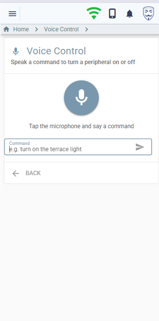

Voice assistant
Natural-language control, grounded in your actual installation — so it cannot invent a device it does not have.
Say “turn off everything on the terrace”, “aprinde lumina din birou”, “run movie mode” or “is the garage door open?”. An LLM agent maps the phrase to concrete actions against your real catalogue, executes them through the same engine the web UI uses, and speaks the answer back.
The feature is disabled until you set feature.voice.enabled = true and supply an LLM
API key. It is your key and your account — myHAB does not proxy anything through a service of its
own.
How it works
Browser / PWA / Android Backend
───────────────────────── ───────────────────────────────────
Web Speech API (STT) voiceCommand GraphQL mutation
transcript ───────────────────────▶ 1. build a catalogue from the live DB
2. agentic tool-use loop with the LLM
plays reply ◀────────────────────── 3. execute the tool calls it returns
(neural MP3, else browser voice) 4. optionally synthesise the reply
keeps sessionId for multi-turnSpeech-to-text happens in the browser; the backend receives text, never audio. That keeps the server contract simple and means any client — the web app, the Android app, a script — can use the same mutation. You can also just type the command.
The agentic loop
This is not one-shot classification. Each request runs a bounded tool-use loop (at most six iterations):
- Build the catalogue of controllable entities.
- Load prior messages for this session, or start fresh.
- Append the transcript and call the configured LLM provider.
- The model returns either tool calls — execute them, feed the results back, loop — or a final reply.
- Persist the conversation, synthesise speech if enabled, return.
Clarification is emergent rather than engineered: when a request is ambiguous the model simply ends its turn with a question instead of guessing. The client speaks it, keeps the session id, and the next utterance continues the conversation. There is no dedicated “ask” tool.
Grounding: the catalogue
On every request the backend builds a fresh catalogue from the database and passes it to the model as JSON. The model may only choose ids that appear in it, and the server re-validates every id before acting.
{
"peripherals": [ { "id", "name", "category", "zones": [...], "aliases": [...] } ],
"zones": [ { "id", "name", "peripherals": [names], "aliases": [...] } ],
"scenarios": [ { "jobId", "name", "description" } ],
"mowers": [ { "deviceId", "name" } ]
}- Only peripherals with at least one connected port are listed.
- Zones carry their peripheral names recursively, so the model can target a whole area.
- Voice aliases — alternate names you set on a peripheral or zone — are included, which is how Romanian nicknames get matched reliably.
At house scale the entire catalogue is a few kilobytes and fits in one prompt. Prompt caching keeps repeated commands cheap. Retrieval infrastructure would add failure modes and cost without solving a capacity problem that exists.
Tools
| Tool | Arguments | Executes via |
|---|---|---|
control_entity | entityType ∈ PERIPHERAL / ZONE / PORT, id, action ∈ ON / OFF / TOGGLE | Publishes evt_switch — the same path the web UI uses, audit logging included. A zone switches every peripheral in it, recursively. |
run_scenario | jobId | Triggers the job. Only active jobs with a scenario are in the catalogue. |
query_state | entityType, id | Reads port state and value. Read-only — answers questions, changes nothing. |
mower_command | deviceId, action ∈ START / STOP / PAUSE / RESUME / DOCK | The Segway cloud REST API. |
If a tool throws — the mower cloud rejects a command, say — the loop feeds the error back to the model so it can explain what happened, rather than aborting the turn.
Providers
The orchestration lives in myHAB; a provider is a pure translator between the neutral conversation shape and one vendor's API. Two ship today:
| Provider | Default model | Key |
|---|---|---|
anthropic | claude-haiku-4-5 | feature.voice.llm.apikey, else ANTHROPIC_API_KEY |
openai | gpt-4o-mini | feature.voice.llm.apikey, else OPENAI_API_KEY |
The system prompt, tool schemas and catalogue format are shared, so both vendors behave identically. Adding a third means implementing one interface and registering it.
API access is a separate, usage-billed product. Create the key at
console.anthropic.com (or platform.openai.com for OpenAI).
Conversation state
Multi-turn state is held server-side in Hazelcast, keyed by a client session id: a five-minute TTL, capped at forty messages, trimmed only at a clean user-message boundary so tool-call pairs stay intact. A failed turn is not persisted, so a broken sequence can never poison the next one.
Text-to-speech
Replies can be rendered by Google Cloud Text-to-Speech instead of the browser's built-in voice. Google TTS does not accept API keys — it needs a service account, whose JSON key myHAB exchanges for a short-lived OAuth token, cached for about an hour.
If TTS fails for any reason the result simply omits audio and the browser voice is used. It is never a hard failure.
Setting it up
- Create an API key at your chosen LLM provider.
- In Settings → App configuration (or the configuration repository) set:
feature: voice: enabled: true llm: provider: anthropic # or openai apikey: "<your key>" # model: claude-haiku-4-5 # optional override - Optional — neural speech. Create a Google Cloud service account, enable the
Cloud Text-to-Speech API and billing, download the JSON key, then:
feature: voice: tts: enabled: true provider: google # either minified inline JSON, or a path on the server apikey: "/opt/myhab/gcp-tts.json" voice: ro: ro-RO-Wavenet-A en: en-US-Neural2-C - Add voice aliases to peripherals and zones whose spoken names differ from their display names. This is the single highest-value tuning step.
Speech recognition uses the Web Speech API, which needs a secure context (HTTPS) and is best supported by Chrome on Android. Typed commands work everywhere, in any language.
Using it

| Capability | English | Romanian |
|---|---|---|
| Single peripheral | “turn on the office light” | “aprinde lumina din birou” |
| Whole zone | “turn off everything on the terrace” | “stinge tot pe terasă” |
| Scenario | “run movie mode” | “pornește modul film” |
| State question | “is the garage door open?” | “e deschisă ușa de la garaj?” |
| Mower | “start mowing” | “pornește tunsul” |
| Mower to dock | “send the mower to the dock” | “trimite mașina la bază” |
The Android client
client/android/ is a native Kotlin + Jetpack Compose companion that adds the one thing
the browser cannot do: hands-free activation.
(wake word | tap-to-talk) → on-device speech-to-text → voiceCommand mutation
→ play the server's MP3 reply (fallback: Android TextToSpeech)
→ if the assistant asked something, listen again in the same conversation| Aspect | Detail |
|---|---|
| Wake word | microWakeWord (vendored from Home Assistant, Apache-2.0) — real TensorFlow audio_microfrontend plus TFLite-Micro through JNI. Fully offline, no account or access key. |
| Listening | A foreground microphone service, so it survives screen-off. Paused during a turn so the microphone is never contended, then resumed. |
| Speech-to-text | Android SpeechRecognizer, on-device, language from Settings (en-US / ro-RO). |
| Auth | Username and password to POST /api/login; the JWT is stored in Keystore-backed encrypted preferences and re-requested on 401. |
| Networking | OkHttp + kotlinx.serialization. No Apollo — one mutation does not justify a code generator. |
| Requirements | minSdk 30 (Android 11), arm64 devices only. NDK + CMake for the native module. |
cd client/android
./gradlew :app:assembleDebug # build
./gradlew :app:installDebug # install on a connected device
# Windows helper: versioned APK into dist/
.\build-apk.ps1 -Installclient/android in Android Studio, not the repository root.
It is a separate Gradle build, deliberately excluded from the root settings.gradle —
the Android Gradle Plugin and the Grails plugin do not coexist in one build, and the two have
unrelated release cadences.
It is a thin client over the existing server contract: no backend changes, no parallel execution path. Everything the app can do, the web client can do too.
Security and cost
- The
voiceCommandmutation requires authentication; the executing user is recorded on the event for audit. - The model can only act on ids present in the catalogue, and the server re-validates each one — a hallucinated device id is rejected, not executed.
- API credentials come from the configuration repository or environment variables. Because a git history keeps old values, rotation means issuing a new key and revoking the old one.
- The catalogue and system prompt are prompt-cached, so the marginal cost per command is small and roughly constant.
Current limitations
- Only ON / OFF / TOGGLE. Dimming, colour and set-value commands are not exposed to voice.
- Scenarios can be run by voice, not authored.
- Peripherals and zones support aliases; mower devices do not yet.
- Speech recognition is single-language per session — no automatic language detection.
- Browser coverage is whatever the Web Speech API offers, which is uneven outside Chrome.